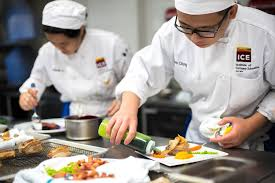

Culinary is a very important trade for helping younger people learn how to cook and present food. If the younger generation learns these very important life skills we will continue to have good food.
In culinary people will learn to make the most exquisite foods and learn important measurements and skills.
List the resources available to students in this trade program, including tools, facilities, and educational materials that support learning and development.
Provide contact details for further inquiries. Include an email address, phone number, and possibly a form for visitors to submit questions.